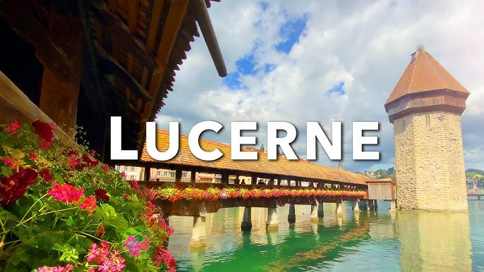
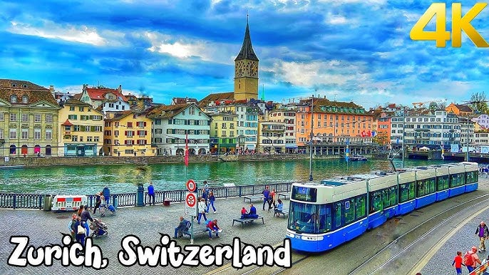

Top Destinations
1. Interlaken

Capital of Switzerland
Learn More
2. Lucerne

Lucerne is a picturesque Swiss city famous for its lake, mountains, and historic sites like Chapel Bridge and the Lion Monument. It's a hub for outdoor activities and local culture, making it a charming destination.
Learn More
3. Zurich

Zurich is Switzerland's largest city, known for its vibrant culture, picturesque Lake Zurich, and charming Old Town, making it a dynamic and inviting destination.
Learn More